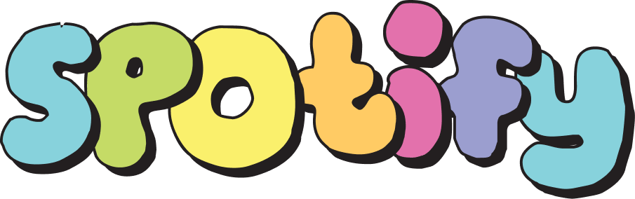
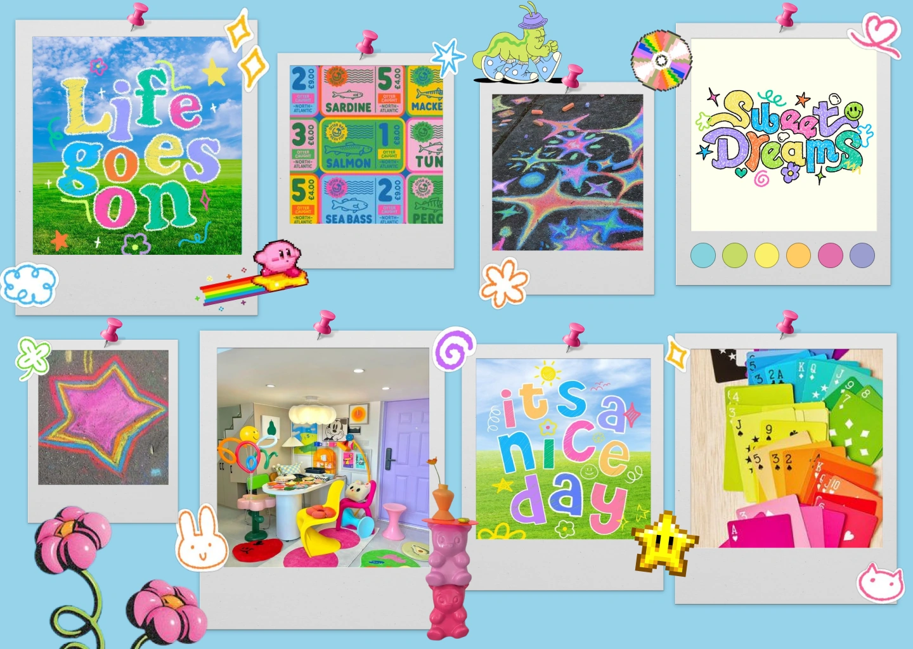
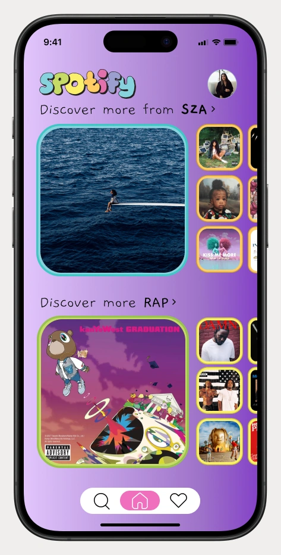
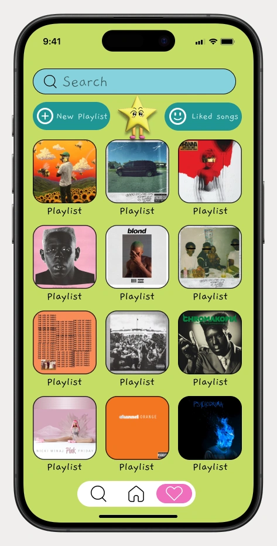

Colour everywhere
A whole pastel palette, rather than one signature colour.
A familiar app, reimagined in my own style. My very first design assignment was a chance to explore colour, character and what a brand could feel like.
↓ Play the story
A new identity.
Three screens.
One little star.
The brief was to take Spotify, an app we all know and use, and reimagine it through our own visual style. We had to create a complete brand identity and apply it to just three screens.
This was my first design ever. The screens are rough around the edges, and I would approach them differently today. I still include the project because the playful, colourful direction says a lot about my personal style.
My very first moodboard, and still one I really like. Chalk lettering, colourful packaging, playful interiors and little doodles come together in a bright, tactile world.

A whole pastel palette, rather than one signature colour.
Chalk textures, rounded lettering and small drawn details.
Playful objects and characters that make the direction feel like my own.
We had only just started using Adobe. I wanted to have fun with it, especially when designing the logo and mascot. The star is still one of the parts I am happiest with.
Rounded, colourful letters give the wordmark a soft and expressive character, with a dark outline that holds the different colours together.
A chance to experiment with shape, shading and expression while learning new tools.
#86D2DC#C5DB66#FAF06C#FFCB64#E371AC#9B9ECFGaegu appears in Bold, Regular and Light in the original brand sheet, carrying the same informal feeling into the interface.


The assignment asked for three screens, rather than a full prototype. These are the original designs, kept as they were: an early exploration of how the new identity could live inside Spotify.

Music discovery, colourful album outlines and the new wordmark.

A personal collection of playlists, with the playful visual direction carried through.

Browsing and discovery through bright categories and handwritten type.
Three original screens, presented as design work rather than a complete interactive app.
I am not as proud of the screens as I am of the moodboard, logo and mascot. If I revisited them, I would give more attention to hierarchy, spacing and readability. But this project belongs here because it captures the beginning of my design voice.